← Présentation du projetProject overview
Le problème directThe forward problem
Une source placée en surface émet une onde acoustique, simulée par une méthode de Galerkin discontinue. Ce calcul est répété à chaque évaluation de la vraisemblance.A source at the surface emits an acoustic wave, simulated with a discontinuous Galerkin method. This computation is repeated at every likelihood evaluation.
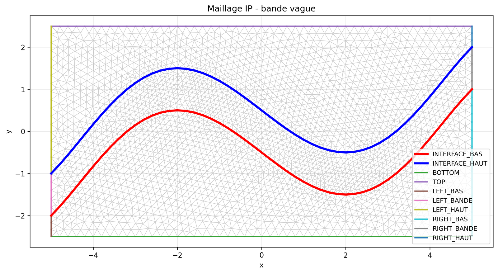
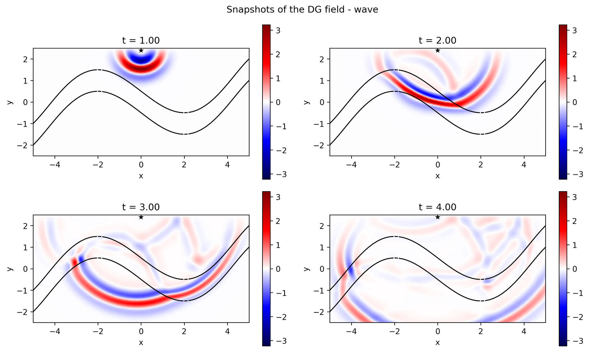
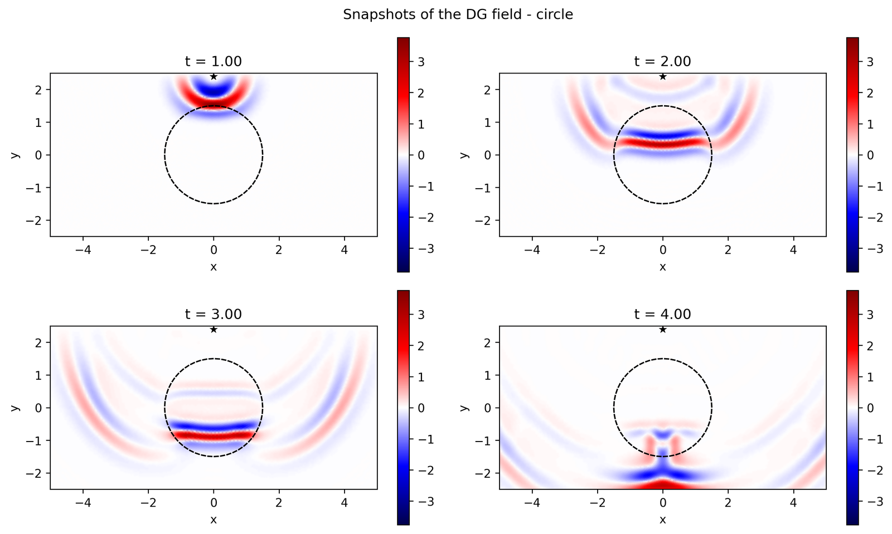
Inversion à deux paramètresTwo-parameter inversion
On cherche les vitesses de deux zones du sous-sol ; la loi a posteriori est explorée par différents algorithmes.We seek the wave speeds of two subsurface zones; the posterior is explored with several algorithms.
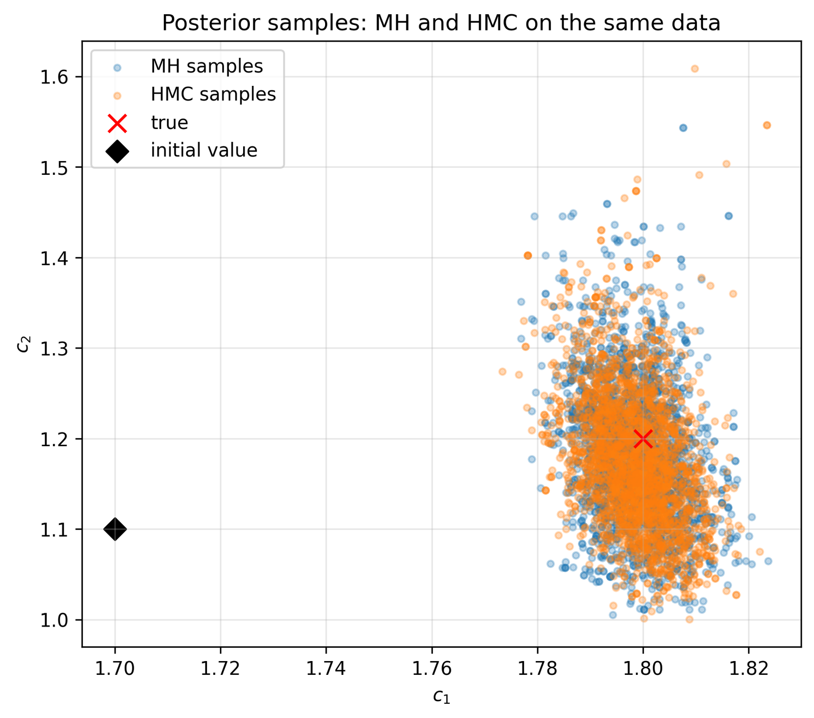
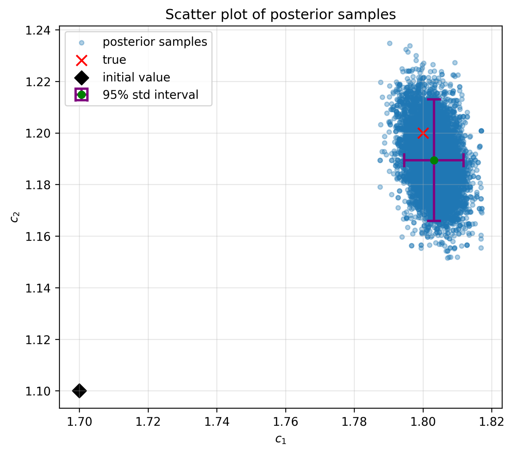
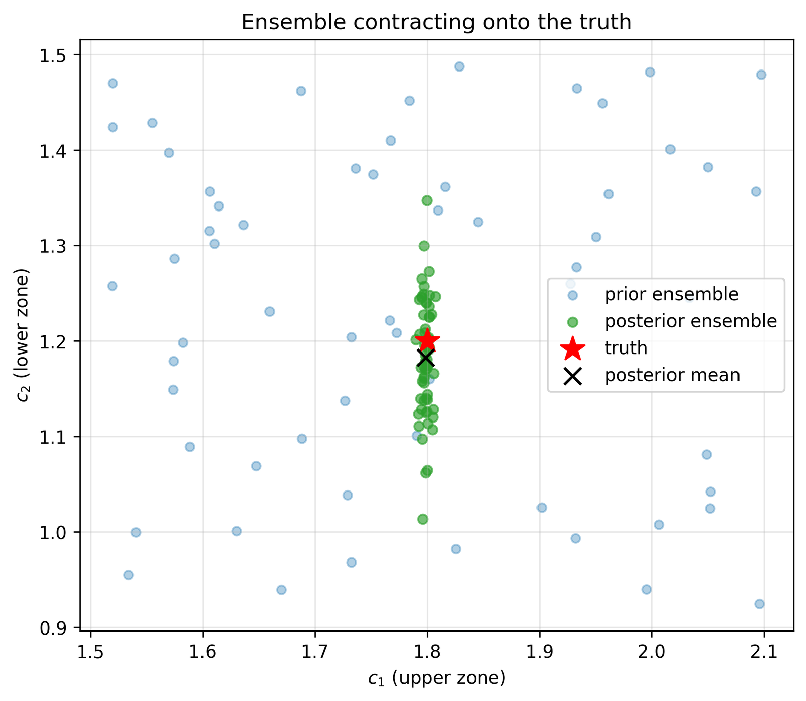
Un modèle à 10 couchesA 10-layer model
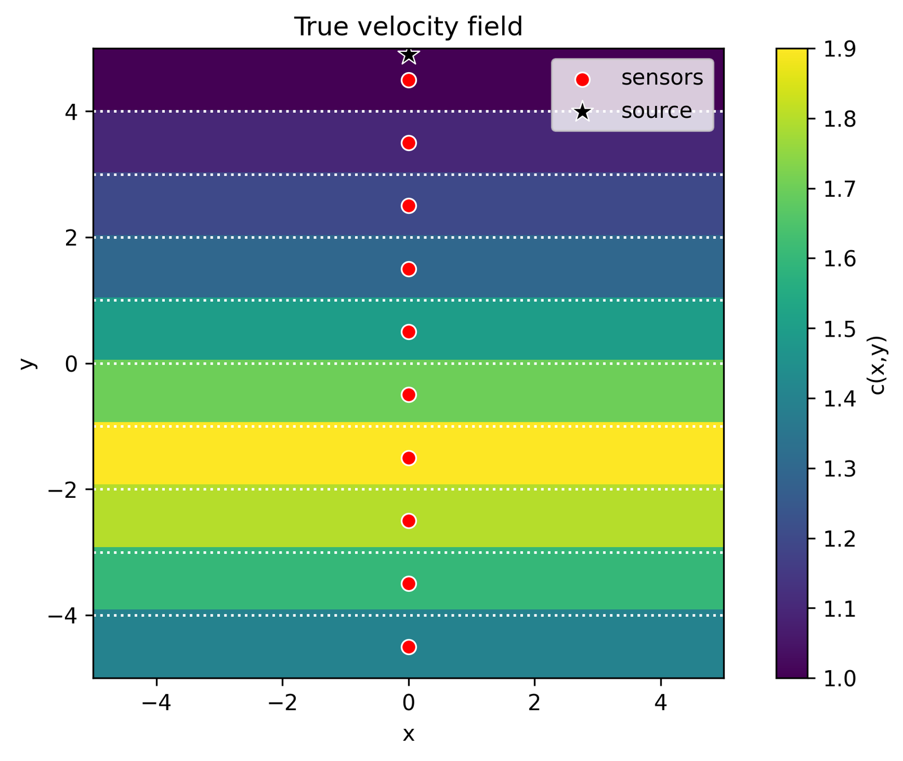
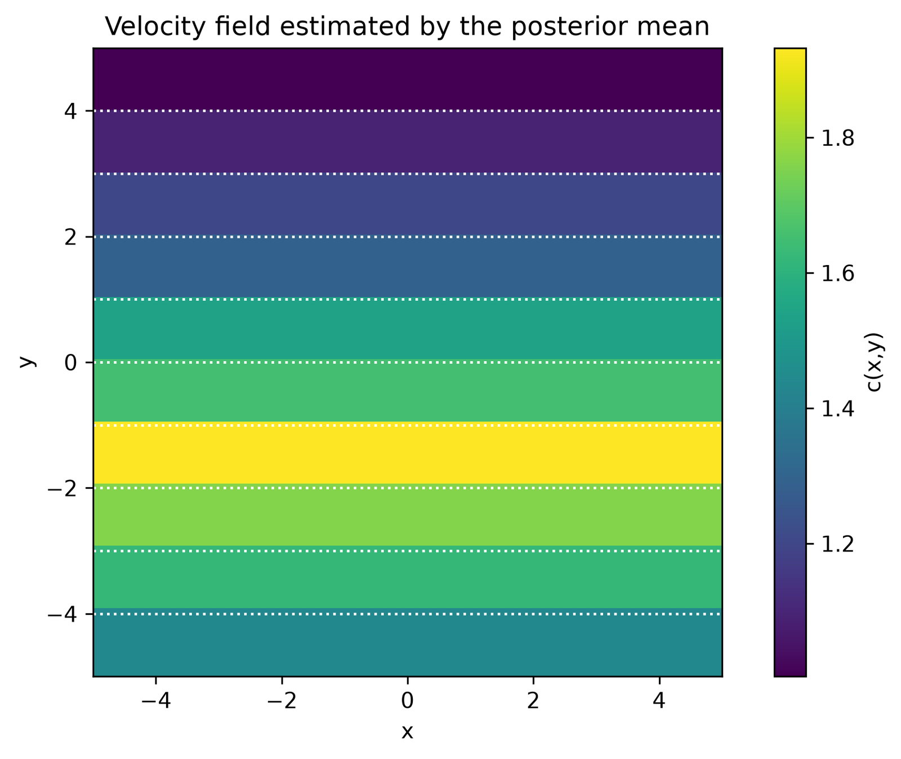
Les lois a posterioriThe posterior distributions
L’inversion fournit, pour chacune des 10 vitesses, une loi de probabilité et non une seule valeur : les incertitudes croissent avec la profondeur, là où les ondes enregistrées en surface portent moins d’information.For each of the 10 velocities, the inversion yields a probability distribution rather than a single value: uncertainties grow with depth, where waves recorded at the surface carry less information.
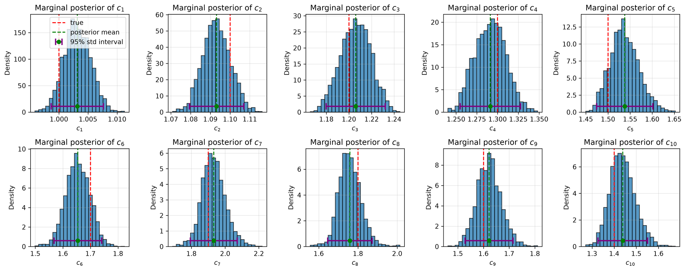
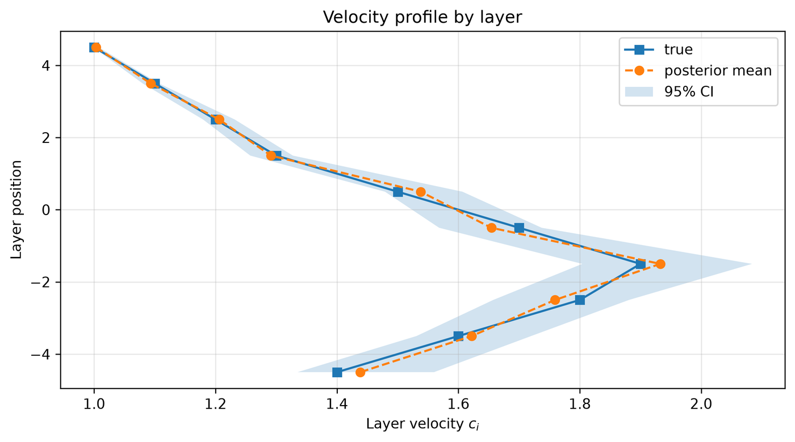
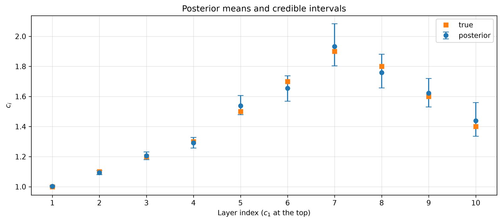
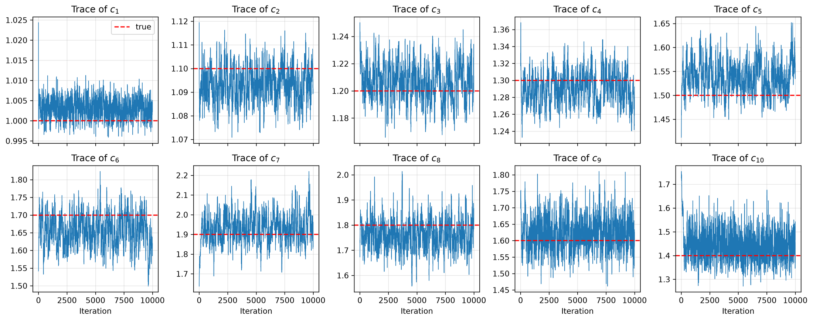